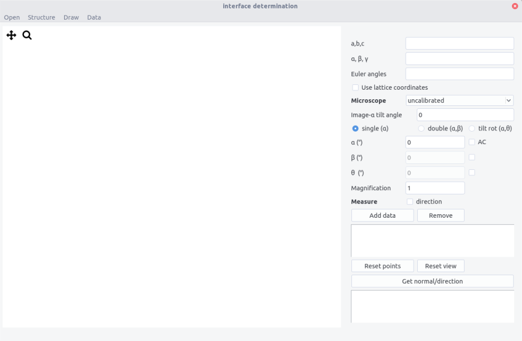
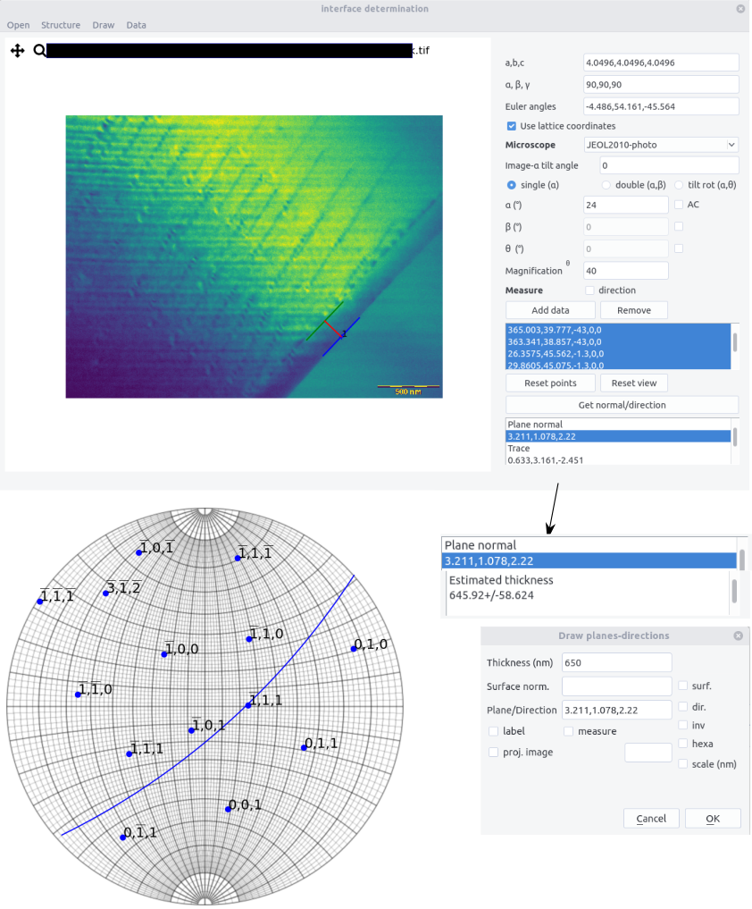

Interface
interface allows to determine interface normal or direction from a set of images.
Introduction¶
Determining an interface plane can be performed using a series of TEM images (usually in Bright Field) acquired during a tilting series. Here we show how to get a quantitative assessment of the interface normal.
In TEM, a plane interface of normal \vec{n} appear as a projection in the viewing screen. For a given orientation determined by the beam direction \vec{b}_e in the sample reference frame (noted with the subscript S), the interface plane is fully described by the direction of the projected traces \vec{t}_p that correspond to the intersection between the foil surface \vec{s} and the plane. In the projected plane coordinates (noted with P), the direction of the trace can be characterized by the azimuth angle \eta with the y_P direction. Note that because of the electron optics, the projected plane frame can be rotated with respect to the holder coordinate system (noted with H) along z_P=z_H (see this section, for the definition of the holder coordinate system).
If the two surfaces are parallel the two projected traces are also parallel (fig. a). Thus, the width w between the two traces can be also measured. These data constitute the set (\vec{b}_e, \eta ,w). If the surfaces are not parallel, the approach described below still works if a specific point C (projected on H) can be tracked (fig. b).

It can be shown that the apparent width w is given by:
The unit normal vector \vec{n} can be estimated following the two steps procedure:
- first solve \vec{t} following the m equations:
- then solve :
the \mathrm{sgn}(i) here denotes that although the measure width is always positive, the dot product \vec{b}_{ei} \cdot \vec{n} can be negative.
The equation can be solved using the least square method, by varying \mathrm{sgn}(i). The solution with the smallest residual is considered to be the correct one.
The inputs data used are for a double tilt holder using the convention described in stereoproj derived from the position of the beam direction and apparent trace direction in the sample coordinates:
Line determination¶
The same approach can be used to determine a linear feature \vec{l} using the data sets (\vec{b}_{ei}, \vec{l}_{pi}, l_i) by solving:
Interface¶
The interface is composed of a top bar menu, a plotting area to display images and a setting/results panel.

Procedure¶
Settings¶
The interface normal can be determined in the sample frame. If necessary it can be determined in the crystal frame if both the nature of crystal and its orientation are known. This requires to tick the Use lattice coordinates button.
Crystal structure can be imported from the structure menu or by filling the a,b,c and \alpha,\beta,\gamma fields.
Microscope calibration need to be set to get correct scaling when the apparent widths w are measured. If the box is set to uncalibrated measured will be performed in pixels. Calibrations can be set in the microscope.txt file with the following scheme:
Microscope_name Magnification nm/px delta(°)
The \delta angle is the angle between the y axis and the \alpha-tilt axis. It can also be entered directly in the image-alpha tilt box.
When calibrated, the Magnification field can be filled. Note that magnification entered are multiplied by 1000.
Getting data¶
-
Select the holder configuration
-
Open an image taken at a given \alpha, \beta, \theta angles. Anticlockwise rotation can be indicated in the
ACbox. Make sure that the file name does not contain non-ASCII character. -
Select the corresponding magnification for a given microscope setting
-
On the image, define the apparent trace direction by clicking on two points. Click a third point on the second trace (from a reference point if the traces are not parallel). Zoom in the image if necessary. The view and points can be reset using the two corresponding buttons
-
Add datato the list. In the data box below appearswidth, eta angle, alpha, beta, theta -
Repeat the operation to get at least 3 conditions but 5-6 will improve accuracy. Select the lines used for the analysis
-
Press the
Get normal/directionto get the plane normal. The results appear as:
Plane normal x, y, z (or h,k,l if using the lattice coordinates) Trace xt,yt,zt Error on trace direction (°) value Error on plane normal (°) value Plane width d in px or nm if calibrated Error on plane width value in px or nm Estimated thickness value +/- in px or nm

Results accuracy
Errors are computed using the bootstrap method. Starting from the set of data (\vec{b}_{ei}, \eta_i) or (\vec{b}_{ei}, w_i), to estimate the trace direction and normal, respectively, the data sets were resampled and estimated traces and normals were determined using the equation above. The 95% confidence interval was calculated from the 95th percentile of deviation of the trace and normal. This indicates that the normal should stay in a cone centered around \vec{n} with a deviation of \Delta\theta=\widehat{(\vec{n},\vec{n}'_{0.95})}.
The same procedure is carried out also in case of the measurement of direction which leads to \Delta\theta=\widehat{(\vec{l},\vec{l}'_{0.95})}.
Note that for some configurations, the confidence interval may be excessively large due to spurious resampling. Adding multiple data, ie. several measurements will prevent from this effect.
The sample thickness can be estimated from:
\vec{s} being the foil normal. It is estimated in the results by considering that the foil normal is along z_M. The error on the estimation is complex because it depends both on the error on d and on the deviation of \vec{n} or \vec{l}. The two contributions can be approximately estimated to provide an error on the thickness.

Example of interface determination from a set of images (see here). Cones around n and t (normal and trace) corresponds to the 95% confidence interval.
Drawing¶
Drawing interface projection can be done using the Draw menu.
-
Enter crystal thickness. Use the value given in the result box.
-
Surface normal can be indicated if known by ticking the
surfbox. Otherwise the surface is chosen as the plane normal to beam direction at zero tilt, which is usually a good approximation. Surface normal can be determined by the method shown here if two interface traces are present. -
Enter the plane. Direction can be plotted if the
dir.box is ticked. -
A label can be displayed when the
labelbox is ticked. -
Click on one trace. Don't forget to fill the tilt angles and microscope settings.
-
Press
OKto plot the two apparent traces at the clicked point.

The same procedure can be applied to determined and draw directions. The direction box should then be checked.

Import/Export data¶
Using the Data menu, data can be imported and results exported.
Data sets are provided in a .txt file using the following scheme
# Interface data file # Euler angles phi1,phi, phi2 (may be left blank) # Data for a plane/direction w_1(or l_1), eta_1,alpha_1,beta_1,theta_1 ... w_N(or l_N), eta_N,alpha_N,beta_N,theta_N
Exporting data will write in a .txt file, adding to the above datasets. For plane:
# Results # Plane normal # n_1,n_2, n_3 # Trace # t_1,t_2,t_3 # Error on trace direction (deg) # ang # Error on plane normal (deg) # ang # Plane width # d # Error on plane width # dd # Estimated thickness # t
for directions:
# Results # Direction # d1,d2,d3 # Error on trace direction (deg) # ang # Direction length # l # Error on direction width # dl # Estimated thickness # t
# sign will not be read during import.